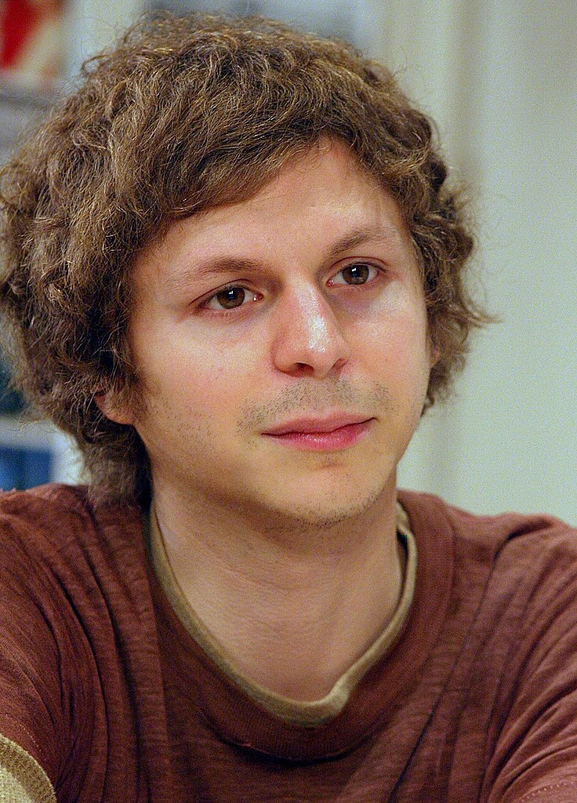

Michael Austin Cera (/ˈsɛrə/; Italian: [ˈtʃeːra]; born June 7, 1988)[1] is a Canadian actor. He is known for his awkward, offbeat characters in coming of age comedy films and for portraying George Michael Bluth in the sitcom Arrested Development (2003–2006, 2013, 2018–2019). He is also known for portraying Brother Bear in The Berenstain Bears.
|
Michael Cera | |
|---|---|
|  | |
Cera in 2012 |
|
| Born | Michael Austin Cera June 7, 1988 (age 35) |
| Occupations | Actor · musician |
| Years active | 1999–present |
| Spouse | Nadine |
| Children | 1 |
Musical career | |
| Genres | Lo-fi · indie folk |
| Instruments | Vocals · bass |
| Website | michaelceramusic.bandcamp.com |
He has had numerous roles in United States television and film productions, and is particularly known for playing the characters of Evan in Superbad (2007), Paulie Bleeker in Juno (2007), Scott Pilgrim in Scott Pilgrim vs. the World (2010) and Scott Pilgrim Takes Off (2023), a fictional version of himself in This Is the End (2013), and Allan in Barbie (2023). Other starring roles include in Nick & Norah's Infinite Playlist (2008), and Youth in Revolt (2009). Cera also has had dramatic roles in Confessions of a Dangerous Mind (2002), Molly's Game (2017), and Gloria Bell (2019). He voiced Dick Grayson/Robin in The Lego Batman Movie (2017), Barry in Sausage Party (2016), and Sal Viscuso, the voice behind the announcements in Childrens Hospital.
Cera is also known for his Broadway performances in the Kenneth Lonergan plays This Is Our Youth in 2014, Lobby Hero in 2018, for which he received a nomination for the Tony Award for Best Featured Actor in a Play, and The Waverly Gallery in 2019.
In addition to acting, Cera is a musician, having released his debut album True That in 2014. Cera has also performed as the touring bassist for indie rock supergroup Mister Heavenly.
Cera was born on June 7, 1988, in Brampton, Ontario. He is the son of Linda (née Cockman) and Luigi Cera, a technician. He is of Sicilian descent through his father.[2] His parents both worked for Xerox.[3] Cera has an older sister, Jordan, and a younger sister, Molly. He became interested in acting after viewing Ghostbusters repeatedly when sick with the chicken pox at the age of three.[4] Cera memorized all the dialogue and idolized Bill Murray.[5] He enrolled in The Second City, Toronto, and took improvisation classes.[5]
Cera attended Conestoga Public School, Robert H. Lagerquist Senior Public School, and Heart Lake Secondary School until grade nine. After starting acting, he completed school online through grade 12.[6][7]